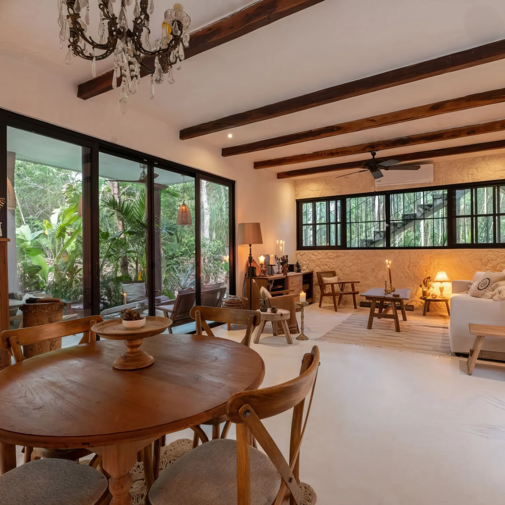
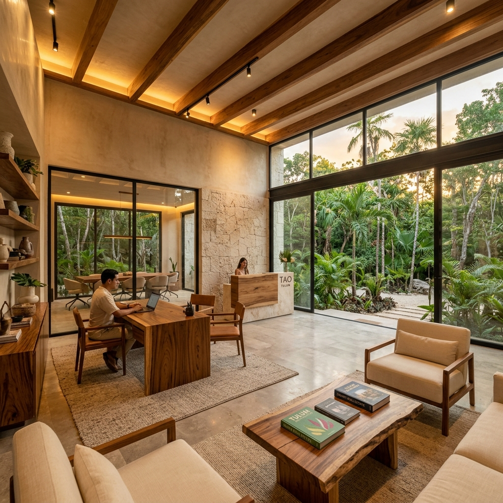

Por no entender el riesgo legal, urbano y de sobreoferta.
En Raíces360mx te facilitamos el proceso y te ahorramos esa pérdida. Creemos en los buenos negocios para todos.
Crecí en Tulum cuando todavía pertenecía a Playa del Carmen y no tenía procesos urbanos propios. Mi papá fue uno de los primeros comerciantes en abrir un negocio formal en la zona hace 25 años. He visto este mercado nacer, desbordarse y distorsionarse desde adentro — no desde un deck de ventas.
Antes de dedicarme al sector inmobiliario, estudié comunicación, trabajé en planeación urbana, en el ITDP en CDMX, y fui espina dorsal del colectivo que transformó la cultura vial de Mérida — un modelo de movilidad urbana que hoy se replica en varias ciudades.
Durante 10 años trabajé desde la ciudadanía en diversos proyectos de ordenamiento urbano. Eso me dio algo difícil de conseguir en este sector: entender cómo se construye — y cómo se destruye — el valor real de un territorio. Posteriormente amplié el conocimiento en ICD business school en Irlanda.
Ese criterio es lo que aplico hoy en Raíces360mx.

Tulum es uno de los mercados más sobrevendidos de México. El 80% de los inversionistas pierde dinero no por falta de recursos, sino por falta de contexto: compran precio publicado, no valor real.
Yo analizo cada operación desde uso de suelo, densidad, parámetros de edificación y momento de mercado. Eso me permite identificar oportunidades antes de que se masifiquen y, sobre todo, saber cuándo no invertir — algo que casi nadie en este sector tiene el incentivo de decirte.
Mi negocio no vende propiedades. Forma inversionistas capaces de tomar decisiones informadas, replicables y con claridad total sobre su retorno.
Lo que nos diferencia operativamente es que invertimos tanto en la postventa como en la captación. Encuestas de satisfacción en cada etapa, red de proveedores verificados y acompañamiento completo en escrituración. Es un sistema medible, no una promesa.
El resultado es un modelo diseñado para escalar desde la confianza, no desde el volumen.

Nuestra meta es elevar el estándar de cómo se comercializa en uno de los mercados más complejos y más mal entendidos de México. Quiero conectar con personas que estén construyendo algo con criterio, y llevar esa visión de vuelta al sureste, donde todavía hay mucho por hacer bien.